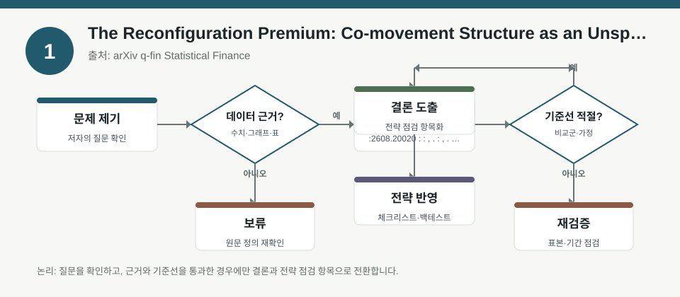
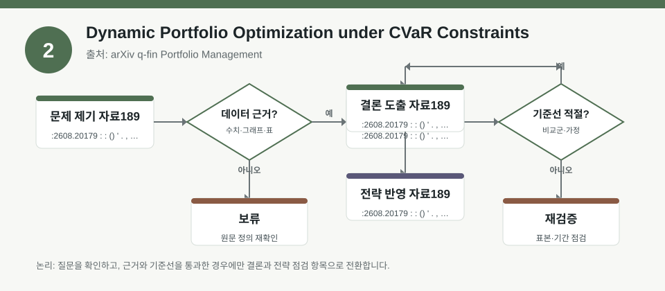
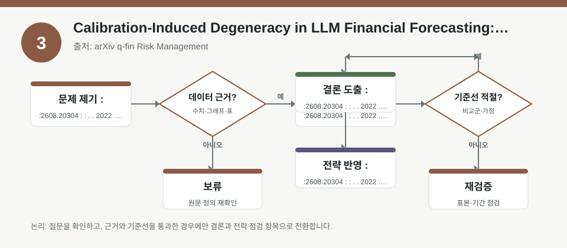

핵심 요약
- 결론: 이번 자료들은 예측 신호 자체보다, 팩터 결합 구조·CVaR 제약·캘리브레이션 절차가 포트폴리오 결과를 어떻게 바꾸는지 점검하는 데 초점이 있습니다.
- 원칙: 숫자 성과는 원문에서 확인이 필요하며, 한국 투자자는 KOSPI/KOSDAQ 업종 노출·환율·금리·변동성·신용/규제 리스크를 함께 점검하는 체크리스트로 읽는 것이 안전합니다.
주목할 자료
| 번호 | 자료 | 출처 | 원문 | 핵심 내용 | 데이터 포인트 | 리스크/한계 |
|---|---|---|---|---|---|---|
| 1 | The Reconfiguration Premium: Co-movement Structure as an Unspanned Dimension of the Variance Risk Premium | arXiv q-fin Statistical Finance | 원문 보기 | 종목 간 동조화 구조가 안정적이지 않으며, 군집 재편이 리스크 프리미엄 해석에 영향을 줄 수 있음을 다룹니다. | 팩터 노출은 시간에 따라 재구성될 수 있으므로, 고정 팩터 가정 검증이 핵심입니다. | 성과 수치·표본 구간·동조화 측정법은 원문에서 확인이 필요합니다. |
| 2 | Dynamic Portfolio Optimization under CVaR Constraints | arXiv q-fin Portfolio Management | 원문 보기 | 종말 손실에 대한 CVaR 제약 아래에서 동적 최적화가 어떻게 구성되는지 설명합니다. | 꼬리위험 제약이 포지션 크기·리밸런싱 규칙·거래비용 민감도를 바꿀 수 있습니다. | 무위험 이자율, 거래비용, 분포 가정, 수치해법의 안정성은 원문 검증이 필요합니다. |
| 3 | Calibration-Induced Degeneracy in LLM Financial Forecasting: An Audit-Trailed Case Study on Next-Day Market Risk | arXiv q-fin Risk Management | 원문 보기 | LLM 기반 위험예측에서 캘리브레이션 절차가 중요하며, 잘못되면 유효 신호가 0으로 붕괴될 수 있음을 보여줍니다. | 모델 스코어링과 캘리브레이션의 분리 여부가 백테스트 해석을 좌우합니다. | 사용한 데이터 기간·모델 가중치 0 처리 과정·사후 누수 방지 절차는 원문 확인이 필요합니다. |
자료별 상세
1. The Reconfiguration Premium: Co-movement Structure as an Unspanned Dimension of the Variance Risk Premium

- 핵심: 시장의 동조화 구조는 고정된 전제보다 재편 가능성을 함께 봐야 하며, 팩터 노출 해석도 정적인 분류만으로는 부족합니다.
- 데이터 포인트: 군집 이동이 많아질수록 동일 섹터·동일 팩터로 묶인 자산의 위험 공유가 약해질 수 있는지 확인이 필요합니다.
- 리스크: 표본 기간, 동조화 측정 방식, “variance risk premium”의 정의와 추정 오차를 원문에서 검증해야 합니다.
- 투자전략 반영 예시: KOSPI/KOSDAQ에서 반도체·2차전지·바이오처럼 동조화가 강한 업종을 볼 때, 환율·금리·달러 유동성 변화가 팩터 노출을 함께 흔드는지 체크리스트로 점검합니다.
- 실행 예시: 백테스트에서 섹터 상관계수와 팩터 로딩을 월별로 재추정하고, 군집 전환 시점에 리밸런싱 빈도와 익스포저 집중도를 기록합니다.
2. Dynamic Portfolio Optimization under CVaR Constraints

- 핵심: CVaR 제약은 평균 수익보다 손실 꼬리를 먼저 관리하게 만들어, 포트폴리오 구성 규칙의 우선순위를 바꿉니다.
- 데이터 포인트: 종말 손실 기준을 쓰면 단기 변동성보다 극단 손실 확률과 크기가 더 중요한 제약이 됩니다.
- 리스크: 어떤 분포 가정과 거래비용, 시간 이산화 방식이 쓰였는지 확인하지 않으면 현실 적용성이 과대평가될 수 있습니다.
- 투자전략 반영 예시: 한국 투자자는 KOSDAQ 고변동 업종 비중, 환율 민감 수출주, 금리 민감 성장주의 꼬리손실을 따로 계산해 위험예산을 나누는 점검표로 활용할 수 있습니다.
- 실행 예시: 동일 기대수익 조건에서 변동성 제약과 CVaR 제약의 리밸런싱 결과를 비교하고, 최대낙폭·좌측꼬리 손실·회전율을 함께 기록합니다.
3. Calibration-Induced Degeneracy in LLM Financial Forecasting: An Audit-Trailed Case Study on Next-Day Market Risk

- 핵심: 모델이 복잡해도 캘리브레이션이 잘못되면 신호가 사라질 수 있어, 성능보다 절차 검증이 먼저입니다.
- 데이터 포인트: 사전 스코어링과 사후 캘리브레이션의 분리 여부, 그리고 가중치가 실제로 남는지 확인하는 감사 추적이 핵심입니다.
- 리스크: LLM 신호가 0으로 수렴한 이유가 데이터 부족인지, 캘리브레이션 설계인지, 시계열 누수 방지 과정인지 원문에서 구분해야 합니다.
- 투자전략 반영 예시: KOSPI/KOSDAQ 단기 리스크 모니터링에 언어모델을 쓸 경우, 뉴스 감성·공시·매크로를 합친 뒤에도 캘리브레이션 전후 예측력 변화를 별도 점검합니다.
- 실행 예시: 모델 도입 전후로 Brier score, 캘리브레이션 커브, 신호 가중치 분포, 다음날 손실 분류 오차를 같은 표에 기록해 백테스트합니다.
팩터·리스크·포트폴리오 관점
- 핵심: 세 자료 모두 “무엇을 예측하느냐”보다 “어떤 가정으로 신호를 포트폴리오에 반영하느냐”가 더 중요하다는 점을 보여줍니다.
- 검수: 팩터 재편 주기, CVaR 제약의 분포 가정, LLM 캘리브레이션 절차는 숫자 성과와 분리해서 원문 메서드로 확인해야 합니다.
정리
- 결론: 한국 투자자 관점에서는 업종·환율·금리·변동성·신용/규제 리스크가 함께 움직일 수 있다는 점을 전제로, 신호보다 검증 절차를 우선하는 해석이 유용합니다.
- 다음 확인: 백테스트 기간, 거래비용 반영, 리밸런싱 규칙, 캘리브레이션 방식, 섹터/팩터 재분류 기준을 원문에서 추가로 점검해야 합니다.